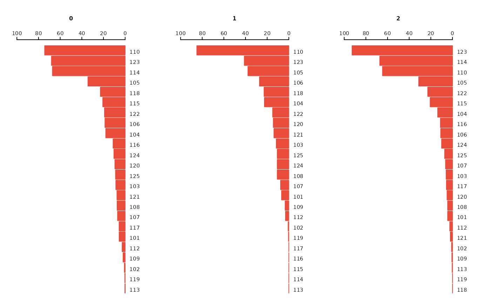

This function creates grouped bar charts with optional faceting. It is useful for comparing category-specific values across different groups and panels.
draw_barchart(
data,
x,
y,
group = NULL,
facet = NULL,
facet_label = NULL,
y_label = NULL,
rev_group = FALSE,
grid = NULL,
topn = NULL,
axis = NULL,
bar_side = NULL,
bar_way = NULL,
gap = NULL,
csize = 0.8,
space = 0.9,
adj = -0.01,
gl = NULL,
cols = NULL,
palette = "Peach",
x_label_side = 1,
legend = FALSE,
legend_label = NULL,
legend_pos = c(0.4, 0.2),
dens = c(-1, -1),
overlay = FALSE
)A data.frame or tibble containing the input data.
The categorical variable (unquoted) for the x-axis.
The numerical variable (unquoted) for the y-axis (bar height).
Optional grouping variable (unquoted) used for color/fill aesthetics.
Optional faceting variable (unquoted) for splitting the data into panels.
Optional character vector of labels corresponding to each facet.
Optional y-axis label or vector of labels for facets.
Reverse the bar position of group variables.
A numeric vector of length 2 indicating the layout (rows, columns) of the plot grid.
Number of top x categories to display in each group/panel.
Optional vector of breaks for the y-axis. If NULL, computed automatically.
Integer indicating the side of bars: 1 = left, 2 = right.
Integer for bar layout: 1 = one-sided, 2 = mirrored.
Horizontal spacing between bars and y-axis (default depends on x_label_side).
Character size scaling factor (default = 0.8).
Vertical space between bars (default = 0.9).
Vertical adjustment of x-label text (default = -0.01).
Integer. Indicating the line type of the grids.
Optional vector of colors for bars.
Character. Name of palette colors.
Side to place x-labels: 1 = inside, 2 = outside (default = 1).
Logical. Whether to show a legend (default = FALSE).
Optional character vector for legend labels.
Optional, numeric vector of length 2 for legend position.
A numeric vector of two density values for bar shading (default = c(-1, -1)).
Logical. Whether to overlay bars from two groups in the same panel.
A base R plot with grouped bar charts, optionally faceted.
data("canregs")
asr <- create_asr(canregs[[1]], year, sex, cancer, event = "fbs")
asr <- cr_filter(asr, drop = c("total", "others"))
draw_barchart(asr, x = cancer, y = cr, group = year, facet = sex)
